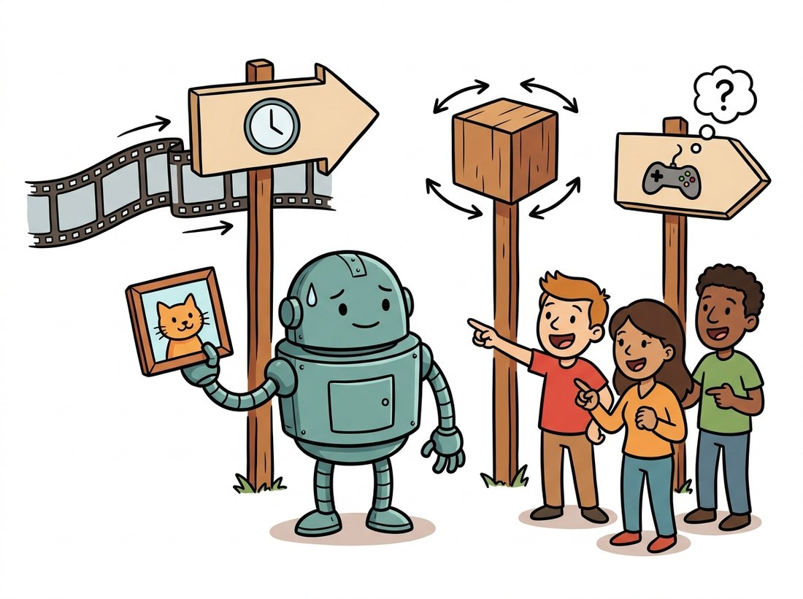
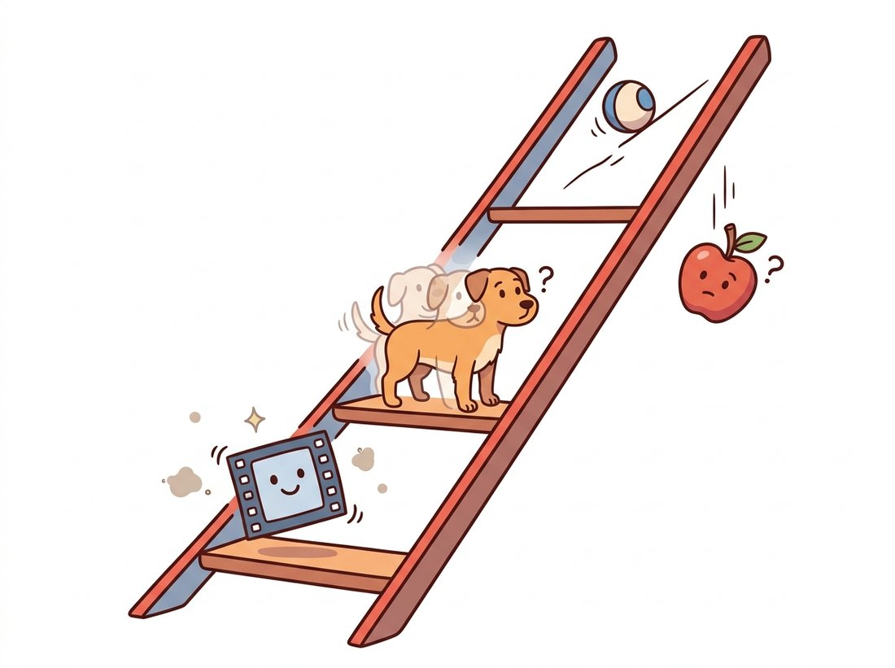

"Drawing one cat is easy. Drawing the same cat sixty times in a row, without it sprouting a third ear in frame 31, turns out to be the entire job."
A U-Net That Learned to Count Frames
A video model is an image diffusion model with one extra demand: every frame must agree with its neighbors, so the only architectural change that matters is adding a mechanism through which frames can talk to each other across time. That mechanism is temporal attention layered onto the spatial denoiser you built in Chapter 33, plus a video autoencoder that compresses time as well as space. Everything hard about video generation, flicker, identity drift, motion that stutters, reduces to one phrase: temporal consistency, and this section is about how the architecture buys it.
In Chapter 33 you trained a model to take a noisy image and predict the noise, then ran that prediction in a loop to sculpt clean pixels out of Gaussian static. Chapter 34 conditioned that loop on a text prompt through cross-attention. If you simply run such an image model independently on each frame of a video, you get a catastrophe that the field calls flicker: each frame is individually plausible, but the texture of a wall, the pattern on a shirt, the exact shade of the sky, all jitter chaotically from frame to frame because nothing forces consecutive frames to agree. The previous section's tools, optical flow and temporal modeling from Chapter 26, told you how to read motion; this section is about how to generate it consistently. The illustration below frames the whole leap: drawing one good frame is easy, and the real job is making it agree across time, across viewpoints, and with the actions you take.

1. From Image Denoiser to Video Denoiser Intermediate
A video is a tensor of shape $(B, F, C, H, W)$: batch, frames, channels, height, width. An image diffusion U-Net or diffusion transformer (DiT) operates on $(B, C, H, W)$. The cheapest possible video model treats the frame axis as part of the batch, denoising every frame independently. This is the flicker baseline, and its failure is instructive: the denoiser has no pathway through which the pixel at $(t, x, y)$ can be influenced by the pixel at $(t-1, x, y)$. The fix is to add exactly such a pathway. Two designs dominate, and modern models use both.
Temporal attention reshapes the tensor so that, for each fixed spatial location, the $F$ frames form a sequence, then applies self-attention along that sequence. A pixel in frame 30 can now look at the same pixel in frames 1 through 60 and copy or blend their values. Temporal (3D) convolution instead slides a small kernel along the time axis, mixing a frame with its immediate neighbors, cheaper than attention and excellent for local motion smoothness. The influential factorized design from Ho et al.'s Video Diffusion Models paper keeps the expensive spatial layers exactly as in the image model and interleaves cheap temporal layers between them, so an image checkpoint can be inflated into a video model by inserting and lightly training the temporal blocks.
Figure 36.1.1 shows the factorized block. The code below implements a minimal version of the temporal-attention insert, the single most important component, as a module you can drop after any spatial attention layer.
# Temporal-attention insert: couples the same spatial location across all
# frames so an image denoiser becomes frame-consistent. Dropped in after each
# spatial-attention block; the residual keeps it near-identity at init.
import torch
import torch.nn as nn
from einops import rearrange
class TemporalAttention(nn.Module):
"""Self-attention along the time axis, applied per spatial location.
Drop this in after a spatial-attention block to make frames consistent."""
def __init__(self, dim, n_heads=8):
super().__init__()
self.attn = nn.MultiheadAttention(dim, n_heads, batch_first=True)
self.norm = nn.LayerNorm(dim)
def forward(self, x, num_frames):
# x arrives as (B*F, C, H, W); regroup so time becomes the sequence axis
bf, c, h, w = x.shape
x = rearrange(x, "(b f) c h w -> (b h w) f c", f=num_frames) # tokens = frames
residual = x
x = self.norm(x)
x, _ = self.attn(x, x, x) # each pixel attends across all F frames
x = residual + x # residual keeps the spatial signal intact
x = rearrange(x, "(b h w) f c -> (b f) c h w", h=h, w=w)
return x
block = TemporalAttention(dim=320, n_heads=8)
video = torch.randn(2 * 16, 320, 32, 32) # batch 2, 16 frames, 320-ch latents
out = block(video, num_frames=16)
print(out.shape) # torch.Size([32, 320, 32, 32]); shape preserved, frames now coupled
The shape gymnastics in the rearrange calls are the whole trick. Spatial attention treats $(H \cdot W)$ as the sequence and $F$ as batch; temporal attention swaps them, treating $F$ as the sequence and $(H \cdot W)$ as batch. The residual connection is essential: it guarantees that adding an untrained temporal layer to a pretrained image model is initially a near-identity operation, so the image model's quality is preserved while the temporal layer learns motion.
The entire difference between an image model and a video model is one rearrange that lets a pixel gossip with its past and future selves. Before temporal attention, each frame is a stranger on a train, politely ignoring everyone; after it, frame 31 finally hears that frame 30 already decided the cat has two ears, and quietly drops the third. Most of deep learning is finding the right axis to let two tensors talk.
2. The Video VAE: Compressing Time Intermediate
Generating a 5-second clip at 24 frames per second and 512-by-512 resolution means 120 frames of about 786,000 color values each ($512 \times 512 \times 3 = 786{,}432$): nearly 100 million numbers. Running diffusion directly in pixel space at that scale is infeasible, which is exactly the problem latent diffusion solved for images in Chapter 33 by working inside a VAE's compressed latent space. Video pushes the idea further: a video VAE compresses not only each frame spatially (the usual 8-by-8 factor) but also temporally, encoding several consecutive frames into one latent frame using 3D convolutions in the encoder and decoder.
A typical modern video VAE applies a temporal compression of 4 on top of an 8-by-8 spatial compression. A 120-frame clip becomes about 30 latent frames; the $786{,}432$ color values per frame become $64 \times 64 \times 4 = 16{,}384$ latent values. The total compression factor is $8 \times 8 \times 4 = 256$, and the diffusion transformer then operates entirely on these compact spacetime latents. This is the same move that the latent-space view of Chapter 31 made for single images, now extended along the clock.
Temporal compression does double duty. It makes diffusion tractable, and it makes consistency easier to enforce. When four pixel-frames are squeezed into one latent frame, the VAE decoder is forced to reconstruct a smoothly interpolating quartet from a single code, so a great deal of short-range temporal coherence is baked into the decoder itself before the diffusion model does any work. The diffusion model then only has to keep the lower-rate latent frames consistent, a much easier problem than keeping 120 raw frames in lockstep. Compression and coherence are the same lever pulled once.
Building and training a 3D video VAE from scratch is hundreds of lines and weeks of GPU time. The diffusers library ships pretrained ones behind the same interface as the image VAE:
# Load a pretrained video VAE instead of building one: the same from_pretrained
# interface as the image VAE. This particular VAE uses a temporal-aware decoder,
# so reconstruction stays smooth across frames before diffusion does any work.
from diffusers import AutoencoderKLTemporalDecoder
# The temporal-decoder VAE shipped with Stable Video Diffusion.
vae = AutoencoderKLTemporalDecoder.from_pretrained(
"stabilityai/stable-video-diffusion-img2vid-xt", subfolder="vae")
latents = vae.encode(frames).latent_dist.sample() # 4-channel spatial latents, 8x downsampled
This replaces an entire 3D-convolutional encoder/decoder plus its adversarial and perceptual training loop, hundreds of lines and substantial compute, with a single from_pretrained call. The library handles the temporal decoding, the scaling factor, and the numerically stable tiled encode/decode for long clips internally.
3. Temporal Consistency: The Central Battle Advanced
With architecture and VAE in place, the real engineering is fighting the failure modes of consistency. There are three, and they fail at different time scales. The illustration below ladders them by time scale, from a quick frame-to-frame twitch up to physics that quietly refuses to hold.

High-frequency flicker is the frame-to-frame jitter of texture and color. It is fought by the temporal attention and 3D convolution of Section 1, which directly couple adjacent frames. Identity drift is slower: over a few seconds, a face slowly morphs, a logo on a shirt mutates, a dog's breed changes. This is a long-range problem; local temporal layers cannot fix it because frame 1 and frame 120 never directly attend to each other unless the attention window spans the whole clip. Motion incoherence is the third: objects that teleport, limbs that pass through bodies, water that flows uphill. This is the deepest failure, and it is really the world-modeling problem that Sections 36.5 through 36.8 confront head-on; a video model that produces coherent motion has implicitly learned some physics.
The three consistency failures are easiest to remember as a ladder of growing time scale and growing difficulty, frame, seconds, physics:
- Flicker (frame to frame): texture jitters; fixed by local temporal layers.
- Identity drift (over seconds): the subject morphs; fixed by long-range attention or an anchor frame.
- Motion incoherence (over the whole clip): the world disobeys physics; not fixed by architecture alone, it is the world-modeling problem.
The rule of thumb that falls out: the longer the time scale of a failure, the deeper the fix it demands. Flicker is an architecture bug, identity drift is a context-length bug, and motion incoherence is a world-knowledge bug. The same three-rung ladder reappears as drift in Section 36.6 and as the evaluation triad in Section 36.8.
A practical and widely used diagnostic borrows directly from Chapter 26: measure consistency with optical flow. Warp each frame forward into the next frame's coordinates using the predicted flow, and measure how much the warped frame disagrees with the actual next frame. Low warping error means the content moved coherently; high error means flicker or teleportation. This warping-error metric is the workhorse quantitative check, and it formalizes the loop closed by the cross-reference map: optical flow, introduced classically in Chapter 15 and learned in Chapter 26, becomes the ruler for video generation here.
# Quantify temporal consistency by re-deriving each frame from its predecessor:
# warp frame t into frame t+1 via dense optical flow, then measure the residual.
# A low score means motion is coherent; a high score flags flicker or teleportation.
import cv2
import numpy as np
def temporal_warping_error(frames):
"""Mean per-pixel error after warping each frame into the next via optical flow.
Low value = temporally consistent; high value = flicker or teleportation."""
gray = [cv2.cvtColor(f, cv2.COLOR_RGB2GRAY) for f in frames]
errors = []
for t in range(len(frames) - 1):
# dense Farneback flow from frame t to frame t+1
flow = cv2.calcOpticalFlowFarneback(
gray[t], gray[t + 1], None, 0.5, 3, 15, 3, 5, 1.2, 0)
h, w = gray[t].shape
# build the sampling grid that pulls frame t forward by the flow
grid_x, grid_y = np.meshgrid(np.arange(w), np.arange(h))
map_x = (grid_x + flow[..., 0]).astype(np.float32)
map_y = (grid_y + flow[..., 1]).astype(np.float32)
warped = cv2.remap(frames[t], map_x, map_y, cv2.INTER_LINEAR)
errors.append(np.abs(warped.astype(float) - frames[t + 1]).mean())
return float(np.mean(errors))
# A perfectly consistent clip approaches the camera/codec noise floor;
# an independently-denoised (flickering) clip scores several times higher.
print(f"warping error: {temporal_warping_error(my_clip):.2f}")The diffusers ecosystem will not compute this for you, so the snippet above is the kind of evaluation glue you write yourself; it is also the seed of the world-model evaluation in Section 36.8, where physical-plausibility probes generalize this idea well beyond optical flow.
A small e-commerce startup wanted to auto-generate short rotating-product videos from a single catalog photo, so shoppers could see a handbag from every angle. The first engineer wired up an image diffusion model and ran it frame by frame on a slowly rotating viewpoint condition. In the demo, each individual frame looked gorgeous, and the founder approved it on the spot. In the staging environment, played as actual video, the leather grain crawled, the stitching shimmered, and the brand logo subtly changed font every few frames. The decision: rather than chase a custom fix, the team switched to a pretrained image-to-video model (Stable Video Diffusion) whose temporal layers were trained on real motion, and added the flow-based warping-error metric to their nightly regression suite so a consistency regression could never again pass a still-frame review. The warping error dropped by roughly fourfold and the logo stabilized. The lesson the founder wrote on the whiteboard: a video is not a stack of images; review it as a video, and measure it as a video.
4. Conditioning and the Image-to-Video Special Case Intermediate
Most practical video generation is conditioned: on a text prompt (text-to-video, the subject of Section 36.2), on a starting image (image-to-video, which animates a photo), or on both. Image-to-video is the most reliable mode today and the most instructive. The conditioning image is encoded by the VAE and concatenated to the noisy latents of every frame, so the denoiser always has the ground-truth first frame to anchor against. This anchoring directly attacks identity drift: because every frame can attend back to a clean encoding of the subject, the face or logo has a fixed reference and wanders far less.
The same classifier-free guidance you met in Chapter 34 applies, with a twist: video models often expose a motion-bucket or guidance-strength control that trades off motion magnitude against stability. Crank it up and the video moves dramatically but risks incoherence; turn it down and you get a stable, nearly still clip. This is the controllability knob that Chapter 35's philosophy of steerable generation extends into the temporal domain, and it is the bridge to action-conditioned generation in the world-model sections, where the conditioning signal becomes a control input rather than a static image.
The factorized U-Net of this section is being displaced by pure transformer backbones operating on spacetime patches, the architecture behind OpenAI's Sora (Brooks et al., 2024) and the open Stable Video Diffusion line (Blattmann et al., 2023). Three threads define the current frontier. First, full 3D attention: rather than factorizing space and time into separate layers, models such as the open-source CogVideoX and Mochi-1 (2024) attend jointly over all spacetime tokens, which improves long-range consistency at quadratic cost, met by aggressive latent compression. Second, longer horizons: autoregressive and rolling-window schemes (e.g. the diffusion-forcing line) generate minutes of video by conditioning each new window on the last, which is precisely the world-model framing of Section 36.6. Third, flow-matching objectives (the score-and-flow arc you met in Chapter 33) are replacing the denoising diffusion probabilistic model (DDPM) noise objective for faster, more stable video training. The throughline: video generation is converging architecturally with world simulation, and the line between them is blurring on purpose.
5. Putting It Together Beginner
The full video-diffusion recipe is now a short list, each item a piece you already understand from earlier chapters. Encode the clip into spacetime latents with a video VAE (the latent idea from Chapter 31). Add noise on a schedule (the forward process from Chapter 33). Denoise with a spatiotemporal transformer or U-Net whose spatial layers come straight from the image model and whose temporal layers (Section 1) couple the frames. Condition on text via cross-attention (Chapter 34) or on an image via concatenation (Section 4). Decode the denoised latents back to pixels with the video VAE. Evaluate consistency with a flow-based warping metric (Section 3). The novelty over an image model is entirely concentrated in the temporal layers and the temporal compression; the rest is diffusion you already built.
That concentration is the reassuring takeaway and the bridge forward. You do not need a new theory of generation to make video; you need a way for frames to talk to each other and a compressed clock to do it efficiently. Section 36.2 scales exactly this recipe up, replacing the U-Net with a latent transformer and the fixed clip length with arbitrary spacetime patches, to reach the Sora-class systems and the open models you can run today.
Conceptual. A colleague proposes generating video by running an image diffusion model independently on each frame, then applying a strong temporal smoothing filter (a moving average over frames) as a post-process to remove flicker. Explain why this fixes high-frequency flicker but cannot fix identity drift or motion incoherence, and connect your answer to the time scales of the three consistency failures in Section 3.
Coding. Take the temporal_warping_error function from Section 3. Generate two synthetic 16-frame clips: one where a white square translates smoothly across a black background, and one where the same square jumps to random positions each frame. Verify that the smooth clip scores far lower. Then add per-frame Gaussian noise to the smooth clip and plot warping error versus noise standard deviation; at what noise level does the metric stop distinguishing smooth from random motion, and why?
Analysis. Temporal attention over all $F$ frames costs $O(F^2)$ per spatial location. For a 120-frame clip, compare the FLOP cost of full temporal attention against a windowed scheme that attends only within a sliding window of 16 frames. Argue which consistency failure (flicker, identity drift, motion incoherence) each scheme handles well and which it sacrifices, and propose a hybrid that gets most of the benefit of both.